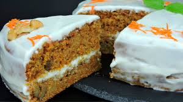

Tarta de zanahoria

Información nutricional
- Calorias: 415
- Grasas: 10 g
- Colesterol: 0
- Sodio: 567 mg
- Potasio: 169 mg
- Hidratos de carbono: 79 g
- Proteínas: 5g
Ingredientes
Masa
- 150 g harina
- 250 g zanahoria rallada
- 85 g azucar
- 2 huevos
- 1 sobre de levadura química
- 1/2 cdta de sal
- 1 cda canela
- 1/2 cda de nuez moscada
- 1/2 cda clavo
Crema
- 400 g queso crema
- 200 ml nata para montar
- 40 gr azucar glass
Elaboración paso a paso
- En una cazuela vertemos el azúcar, añadimos el agua y lo ponemos a fuego medio-alto
- Cocinamos hasta que la mezcla se vuelva de color caramelo
- Una vez el caramelo adquiera el color deseado añadimos la nata y la mantequilla
- El caramelo ya está listo, reservamos
- Tamizamos la harina
- Añadimos una cucharada de canela, una cucharada de nuez moscada y media cucharadita de clavo molido
- Añadimos media cucharadita de sal y mezclamos todo
- Rallamos las zanahorias
- Ponemos en el recipiente de la amasadora el azúcar y el aceite y lo batimos durante aprox 1 minuto
- Añadimos un huevo y lo integramos
- Añadimos un huevo más
- Añadimos la mezcla de harina que preparamos anteriormente
- y un sobre de levadura química o polvos de hornear de 16 gramos
- Mezclamos todo
- Añadimos la zanahoria
- Añadimos las nueces partidas
- Forramos el fondo del molde con papel para hornear y untamos los bordes con aceite (el tamaño de mi molde es de 22 cm)
- Ponemos en el molde la tercera parte de la masa
- Metemos al horno y horneamos a 180 grados con calor por arriba arriba y abajo unos 15 minutos o hasta que esté hecho (el horno ha de estar precalentado)
- Pasados los 15 minutos pinchamos con un cuchillo la masa, si sale seco, entonces ya está hecho
- Lo ponemos sobre la rejilla para que se vaya enfriando
- y de la misma forma horneamos las láminas restantes
- Ponemos en el recipiente de la batidora queso para untar
- Añadimos nata o crema para montar
- y añadimos azúcar glass o azúcar impalpable
- Batimos la mezcla hasta que se vuelva cremosa y esponjosa
- Para montar la tarta puedes utilizar el mismo molde pero sin el fondo en el que hemos horneado las láminas
- Forramos con papel de hornear para que luego sea fácil desmoldar
- Ponemos una lámina en el molde y ponemos por encima la tercera parte de la crema (Las láminas quedarán muy tiernas)
- Cubrimos la tarta con el caramelo ligeramente templado
- Dejamos reposar la tarta en la nevera un par de horas y la desmoldamos
- Y ya la tendríamos lista